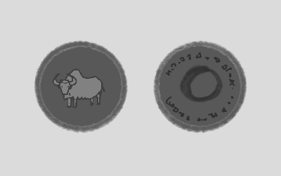

The Shadow's Journey
Employees have resumes and job titles, but consultants, like senior executives and entrepreneurs, have origin stories. Even the lowly $20/h ones have origin stories. But unlike senior executives and entrepreneurs, we are not ersatz superheroes within the mythos of the business world. Nor are we even regular heroes, villains, or antiheroes.
We are shadows.
And we have shadow origin stories that begin, like superhero origin stories, with some sort of horrifying accident. The shadow’s journey though, unlike the hero’s journey, doesn’t end in either triumph or tragedy.
In fact, the shadow’s journey does not end at all.
At some point, it simply becomes billable. Living on billable time is a curious and shadowy existential state that we’ll say a lot more about in future issues, but let us talk about origin stories.

In my case, the accident happened late one night in 2010, while I was working at Xerox. On my way out of the building, I saw what I thought was a small blank 2x2 scribbled on the whiteboard of a conference room. Unable to resist, I grabbed a marker and reached out to fill it in.
BAM! I felt a sharp pinch, and the 2x2 scuttled away and disappeared under the door.
Turns out, the 2x2 was actually a spider that had lost 4 of its legs after being trapped in a projector during an 8-hour strategy meeting, and had also turned radioactive from the RGB radiation.
When I woke up the next day, after a feverish, sleepless night, and got to my office, I found, to my horror, that I had gone organizationally blind.
I could no longer see the organization that everybody else clearly inhabited. Everybody was behaving like they could see all the familiar realities of organizational life — org charts, titles, boundaries, protocols. So clearly things were still normal, except I’d gone entirely blind to things that were clearly still there. Things I too had been able to see, as clearly as anyone else, just the day before.
Now I could see people, desks, chairs, whiteboards, and documents, but I couldn’t see the organization itself. And this was a huge liability because, as a middle manager, it was my job to believe in the organization.
Yes, you heard that right. The job of the middle manager is to believe in the organization. A futures consultant friend of mine predicts that Electric Monks running deep-learning based belief engines will soon replace all middle managers by 2040, but until that happens, middle managers will do much of the believing-in-organizations necessary to keep them running.
But back in 2010, I was in trouble. I couldn’t do my job. I started saying truly embarrassing things in meetings, like “But why??”
So I had to leave in disgrace.
I bought myself a few henleys, a pair of distressed jeans, and a tactical backpack. Then I grew a stubble and went off to Bhutan to figure out what I was supposed to do with my life, now that I was organizationally blind and unable to do the only thing I knew how to do.
For several weeks, I got nowhere. Every night, tossing and turning in my cheap hotel room, I had nightmares about 4-legged spiders crawling over the walls. I spent the days wandering in the hills, bleary-eyed.
And then one day, after a long, hard, hike in the mountains, the nightmares suddenly stopped.
Quietly, and without ceremony or flashes of profound enlightenment (that’s for heroes, not shadows), the nightmares were gone. The 2x2-spider demons had retreated, and the fever had lifted. And just like that, I had turned billable (though I did not know it yet).
I was able to sleep a dreamless, restful sleep for the first time in weeks.
When I woke up the next morning, I found myself reaching for my notebook and drawing a 2x2. Then another one. Then another one.
For the next three days, I lived a steady, serenely energized life, sleeping soundly and dreamlessly at nights, spending mornings filling my notebook with the most poignantly insightful 2x2s I have ever seen, and afternoons practicing martial arts.
Sadly, I lost the notebook during a hectic covert gig in Budapest a few months later.
Those were the best 2x2s I have ever made, and I’ll never top them. They captured sublime answers to all the questions I had then, or have had to ask (or been asked) since. Now, I must painfully reconstruct the 2x2s I need out of dim memories of those in The Lost Notebook. When I come up with a particularly good one, I think to myself, “this is almost good enough to be from The Lost Notebook.”
Anyhow, on the fourth day, my notebook was full, but my pockets, after paying for what would be my last cup of yak butter tea, were empty.
And so there I was, sitting in a countryside tea shop, sipping my awful yak butter tea, and wondering how to make money, when a monk came in. I hadn’t seen him at the tea shop before.
He sat down across me and motioned to the waiter for a cup of tea. Then he smiled at me, and looked inquiringly at my open notebook. I shrugged and slid it across to him.
He sat there, sipping his tea, and gravely reviewing my notebook, for several minutes. Finally, he closed it and slid it back across to me. After a moment of thought, he took a rough-hewn silver coin out of his robe, and slid it halfway across the table, between us.
“Is that for me?” I enquired cautiously.
The monk nodded, with a slight smile.
“For my notebook?”
He shook his head.
“What do I have to do?” I asked.
In response, the monk got up and headed out the door, pausing at the doorstep to look back at me over his shoulder, and holding up a second coin for me to see.
I downed the rest of my butter tea, picked up my coin and notebook, and followed. A 50% advance was good enough for me.
We walked a mile. Though I was in decent shape from my weeks of martial arts practice and hiking, I found myself huffing and puffing to keep up with him. Somehow, he managed to stay several steps ahead of me with no apparent effort.
Eventually, we arrived at a medium-sized monastery on a hill. Young monks were doing yard work. Through a window, I could see some sort of grand abbot monk in a special hat chatting on a smartphone. Christian Bale and Liam Neeson were practicing sword-fighting on the roof. A few motorcycles were parked in front. All in all, a regular modern monastery.
We walked around to the back, where there were a dozen enclosed pens, each with a large shaggy yak in it. The monk indicated one of the yaks, handed me a pair of shears, and stepped back, settling down beneath a tree.
“You want me to…?” I began, but he had already closed his eyes and was deep in meditation.
I got to it.
It took me two hours to shave that yak. It was a big yak. Fortunately, it was also a good-tempered yak that did not appear to mind being shaved. It was wholesome, tiring work, and it left me exhausted.
When I was done, I stepped back, admired my handiwork for a minute, and then walked back to where the monk was still meditating. Or, as it turned out, asleep. I shook him awake.
“Done!” I said.
He got up, went over to the yak, and inspected it and the pile of wool next to it. He seemed satisfied. He reached into his robe, pulled out the second silver coin, and handed it to me.
I said, “Good doing business with you. How about I come back tomorrow and shave another one?”
At this the monk looked at me with a twinkle in his eye. His slight smile broadened into a huge grin, and he spoke for the first time.
“We don’t have the budget right now, but circle back next quarter.”
And with those words, something terrifying happened. The monastery, the pens, the yaks, the other monks, the abbot in the window, all vanished, dissolving into black smoke.
My monk — I suppose I should call him my first client — vanished last. He vanished quite slowly, beginning with his sandals, and ending with the grin.
I felt anxiously in my pockets. The two silver coins were still there.
I examined the coins more closely. Each had a yak on the front, and an inscription I couldn’t read on the back. It wasn’t Tibetan or any language I recognized.
Many years later, I met an expert who consulted on obscure languages, and showed him my coins.
“Where did you get these?” he asked, with a curious look on his face. “They’re not rare, but they’re not very common either. I haven’t seen one of these outside of private collections for years.”
“Why, what are they?”
“They are called yakbucks. They have no documented provenance. I’ve only heard rumors about them.”
“What rumors?”
“They are supposedly coins from an ancient global order of… well…”
“…assassins?”
He chuckled. “You’ve been watching too many John Wick movies. No, an order of what I suppose we’d call management consultants today. It was called the Order of the Yak. Died out in the 18th century I think.”
“Makes sense I found them in Bhutan then. What are they worth?”
“The history is all speculation and rumor, so probably not much, and there’s a fair number of them around. They just have curiosity value. You might get a few hundred dollars from a collector if you’re lucky. But you should probably just hang on to them. Good conversation starters. And maybe they’ll appreciate in value if anyone ever digs up some verifiable history on them.”
“Can you read the inscription on the back?”
“Sort of. It is in a curious language called Yaka, invented by 16th century Silk Road traders. Some people claim that’s the origin of the English word yakking.”
“And what does it say?”
“I’m not 100% sure, but I think it says, First you pay for your beliefs. Then your beliefs pay for you.”
It would take me years of yakking to learn what that meant.
That was my first gig. I still have the two yakcoins. In fact, I have many more, buried in a few secret stashes around the world. And as for the Order of the Yak, let me just say the consultant on obscure languages was wrong. It did not die out in the 18th century.
If you build a career in indie consulting, you too may one day earn some yakbucks. Some people say you’re not a real consultant until you’ve earned some yakbucks. Perhaps they are right.
Yakbucks can’t be spent like regular money, but they are more than mere curiosities. They are worthless without deep knowledge of the art of gig. But the more you know, the more valuable they become. And curiously, the more yakbucks you earn, the more real dollars you earn as well. Perhaps there is some sort of mystic connection between he two. So look out for them and collect them when you can. They are silver, and about an inch across. You generally have to wander off the beaten path of gigs a bit to find them.
Those weeks in Bhutan proved to be the turning point. After my encounter with the monk, I made some regular money doing some thought leadership for a local travel agency, bought a ticket back home, incorporated my business as an LLC, and went into business. Shortly after, I found my first normie client, who paid me in dollars.
I had turned billable.
So long as I was getting paid, I found I could see, and believe in, any organization. My horrible accident had turned into a gift. Perhaps one day, electric monks will replace me too, but until that day comes, I suspect my gift will keep me billable.
We will talk more about this shadowy world and the billable life in coming weeks, but until next time, you may want to reflect on your own origin story. What horrible accident sent you down this path? What gift did it turn into? Have you earned any yakbucks yet?
And perhaps the most important question: are you billable yet?